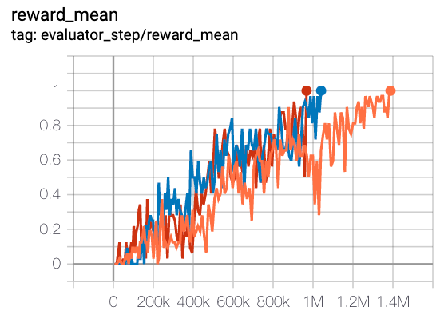
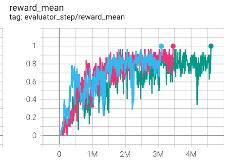
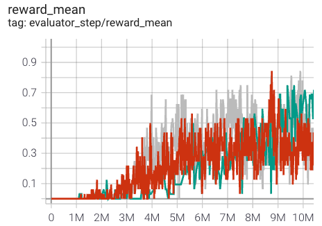
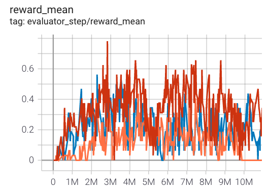
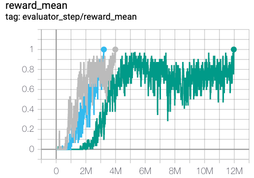

QMIX¶
Overview¶
QMIX is proposed by Rashid et al.(2018) for learning joint action value function conditioned on global state information in multi-agent centralized training, and extracting decentralized policies from the centralized end-to-end framework. QMIX employs a centralized neural network to estimate joint action values as a complex non-linear combination of per-agent action values based on local observations, which provides a novel representation of centralized action-value functions and guarantees consistency between the centralized and decentralized policies.
QMIX is a non-linear extension of VDN (Sunehag et al. 2017). Compared to VDN, QMIX can represent more extra state information during training and a much richer class of action-value functions.
Quick Facts¶
QMIX uses the paradigm of centralized training with decentralized execution.
QMIX is a model-free, value-based, off-policy, multi-agent RL method.
QMIX only support discrete action spaces.
QMIX considers a partially observable scenario in which each agent only obtains individual observations.
QMIX accepts DRQN as individual value network to tackle the partially observable issue.
QMIX represents the joint value function using an architecture consisting of agent networks, a mixing network, a hyper-network. The mixing network is a feed-forward neural network that takes the agent network outputs as input and mixes them monotonically, producing joint action values. The weights of the mixing network are produced by a separate hypernetwork.
Key Equations or Key Graphs¶
VDN and QMIX are representative methods that use the idea of factorization of the joint action-value function \(Q_{tot}\) into individual ones \(Q_a\) for decentralized execution.
In order to achieve centralized training with decentralized execution (CTDE), we need to ensure that a global \(argmax\) performed on \(Q_{tot}\) yields the same result as a set of individual \(argmax\) operations performed on each \(Q_a\):
VDN factorizes the joint action-value function into a sum of individual action-value functions. \($Q_{\mathrm{tot}}(\boldsymbol{\tau}, \boldsymbol{u})=\sum_{i=1}^{N} Q_{i}\left(\tau_{i}, u_{i}\right)$\)
QMIX extends this additive value factorization to represent the joint action-value function as a monotonic function. QMIX is based on monotonicity, a constraint on the relationship between joint action values \(Q_{tot}\) and individual action values \(Q_a\).
The overall QMIX architecture including individual agent networks, the mixing network, the hyper-network:

QMIX trains the mixing network via minimizing the following loss:
Each weight of the mixing network is produced by a independent hyper-network, which takes the global state as input and outputs the weight of one layer of the mixing network. More details can be found in the original paper Rashid et al.(2018).
VDN and QMIX are methods that attempt to factorize \(Q_tot\) assuming additivity and monotonicity, respectively. Thus, joint action value functions satisfying those conditions would be well factorized by VDN and QMIX. However, there exist tasks whose joint action-value functions do not meet the said conditions. QTRAN (Son et al. 2019), proposes a factorization method, which is free from such structural constraints via transforming the original joint action-value function into an easily factorizable one. QTRAN guarantees more general factorization than VDN or QMIX.
Implementations¶
The default config is defined as follows:
- class ding.policy.qmix.QMIXPolicy(cfg: dict, model: Optional[Union[type, torch.nn.modules.module.Module]] = None, enable_field: Optional[List[str]] = None)[source]
- Overview:
Policy class of QMIX algorithm. QMIX is a multi model reinforcement learning algorithm, you can view the paper in the following link https://arxiv.org/abs/1803.11485
- Interface:
_init_learn, _data_preprocess_learn, _forward_learn, _reset_learn, _state_dict_learn, _load_state_dict_learn _init_collect, _forward_collect, _reset_collect, _process_transition, _init_eval, _forward_eval _reset_eval, _get_train_sample, default_model
- Config:
ID
Symbol
Type
Default Value
Description
Other(Shape)
1
typestr
qmix
POLICY_REGISTRY2
cudabool
True
3
on_policybool
False
prioritybool
False
5
priority_IS_weightbool
False
6
learn.update_per_collectint
20
7
learn.target_update_thetafloat
0.001
8
learn.discount_factorfloat
0.99
The network interface QMIX used is defined as follows:
- class ding.model.template.QMix(agent_num: int, obs_shape: int, global_obs_shape: int, action_shape: int, hidden_size_list: list, mixer: bool = True, lstm_type: str = 'gru', dueling: bool = False)[source]
- Overview:
QMIX network
- Interface:
__init__, forward, _setup_global_encoder
- forward(data: dict, single_step: bool = True) dict[source]
- Overview:
forward computation graph of qmix network
- Arguments:
- data (
dict): input data dict with keys [‘obs’, ‘prev_state’, ‘action’]
agent_state (
torch.Tensor): each agent local state(obs)global_state (
torch.Tensor): global state(obs)prev_state (
list): previous rnn stateaction (
torch.Tensoror None): if action is None, use argmax q_value index as action to calculateagent_q_actsingle_step (
bool): whether single_step forward, if so, add timestep dim before forward and remove it after forward- Returns:
ret (
dict): output data dict with keys [total_q,logit,next_state]total_q (
torch.Tensor): total q_value, which is the result of mixer networkagent_q (
torch.Tensor): each agent q_valuenext_state (
list): next rnn state- Shapes:
agent_state (
torch.Tensor): \((T, B, A, N)\), where T is timestep, B is batch_size A is agent_num, N is obs_shapeglobal_state (
torch.Tensor): \((T, B, M)\), where M is global_obs_shapeprev_state (
list): math:(B, A), a list of length B, and each element is a list of length Aaction (
torch.Tensor): \((T, B, A)\)total_q (
torch.Tensor): \((T, B)\)agent_q (
torch.Tensor): \((T, B, A, P)\), where P is action_shapenext_state (
list): math:(B, A), a list of length B, and each element is a list of length A
Benchmark¶
environment |
best mean reward |
evaluation results |
config link |
comparison |
|---|---|---|---|---|
MMM
|
1 |
 | Pymarl(1)
|
|
3s5z
|
1 |
 | Pymarl(1)
|
|
MMM2
|
0.8 |
 | Pymarl(0.7)
|
|
5m6m
|
0.6 |
 | Pymarl(0.76)
|
|
2c_vs_64zg
|
1 |
 | Pymarl(1)
|
P.S.：
The above results are obtained by running the same configuration on five different random seeds (0, 1, 2).
For the multi-agent discrete action space algorithm like QMIX, the SMAC environment set is generally used for testing, and is generally evaluated by the highest mean reward training 10M
env_step. For more details about SMAC, please refer to SMAC Env Tutorial .
References¶
Tabish Rashid, Mikayel Samvelyan, Christian Schroeder de Witt, Gregory Farquhar, Jakob Foerster, Shimon Whiteson. Qmix: Monotonic value function factorisation for deep multi-agent reinforcement learning. International Conference on Machine Learning. PMLR, 2018.
Peter Sunehag, Guy Lever, Audrunas Gruslys, Wojciech Marian Czarnecki, Vinicius Zambaldi, Max Jaderberg, Marc Lanctot, Nicolas Sonnerat, Joel Z. Leibo, Karl Tuyls, Thore Graepel. Value-decomposition networks for cooperative multi-agent learning. arXiv preprint arXiv:1706.05296, 2017.
Kyunghwan Son, Daewoo Kim, Wan Ju Kang, David Earl Hostallero, Yung Yi. QTRAN: Learning to Factorize with Transformation for Cooperative Multi-Agent Reinforcement Learning. International Conference on Machine Learning. PMLR, 2019.
Mikayel Samvelyan, Tabish Rashid, Christian Schroeder de Witt, Gregory Farquhar, Nantas Nardelli, Tim G. J. Rudner, Chia-Man Hung, Philip H. S. Torr, Jakob Foerster, Shimon Whiteson. The StarCraft Multi-Agent Challenge. arXiv preprint arXiv:1902.04043, 2019.